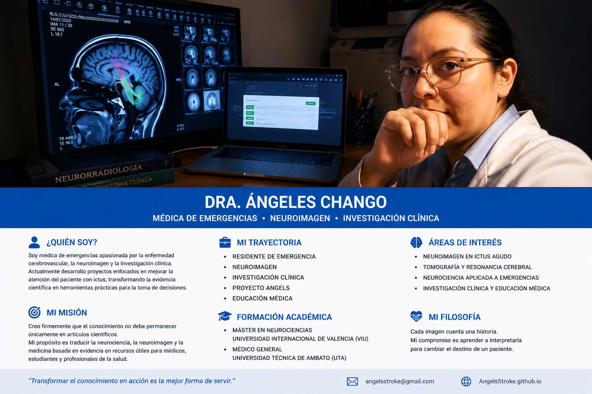

Soy médica de emergencias apasionada por la enfermedad cerebrovascular, la neuroimagen y la investigación clínica. Actualmente desarrollo proyectos enfocados en mejorar la atención del paciente con ictus, transformando la evidencia científica en herramientas prácticas para la toma de decisiones.
Creo firmemente que el conocimiento no debe permanecer únicamente en artículos científicos. Mi propósito es traducir la neurociencia, la neuroimagen y la medicina basada en evidencia en recursos útiles para médicos, estudiantes y profesionales de la salud.